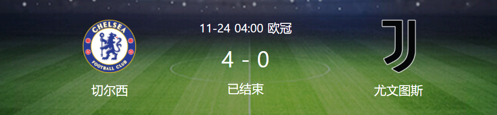

At 04:00 on November 24, Beijing time, the fifth round of Group H of the Champions League group match ushered in a focus war, with Chelsea playing Juventus at home. In the first half, Trevor Chaloba half turned to smash the goal, then Tiago Silva staged a goal line clearance, and Kanter was injured and retired. In the second half, Rhys James made a great achievement with a small angle volley shot. Chick strolled around to assist Odoy and shot successfully. Chilwell was injured and retired. Werner's substitute came on the court to make up for time. In the end, Chelsea won 4-0 at home to beat Juve at many points, and advanced to the top of the group.
Key events
At 04:00 on November 24, Beijing time, the fifth round of Group H of the Champions League group match ushered in a focus war, with Chelsea playing Juventus at home. In the first half, Trevor Chaloba half turned to smash the goal, then Tiago Silva staged a goal line clearance, and Kanter was injured and retired. In the second half, Rhys James made a great achievement with a small angle volley shot. Chick strolled around to assist Odoy and shot successfully. Chilwell was injured and retired. Werner's substitute came on the court to make up for time. In the end, Chelsea won 4-0 at home to beat Juve at many points, and advanced to the top of the group. The 24th minute, classic reverse! Ziyeh opened the left corner and Ludige hit the ball into the middle of the road from the back. Trevor Charlotte was unmarked and half turned to sweep the goal. Chelsea took a 1-0 lead!
In the 28th minute, Lucatelli sent out an ingenious pass, Morata put in a single shot to attack the goal, and Tiago Silva struggled to catch up with the goal line and then got injured!
In the 55th minute, Ludegger split the edge, Chilwell caught the ball and crossed the ball, which was cleared. Rees James stopped the ball at the back of the chest and shot a small angle volley to make great achievements, and Chelsea was 2-0 ahead!
In the 57th minute, Ruzhnio counter steals the ball in the front court, Lvdigg drives the attack with a diagonal pass, and then the blue army cooperates in a small area within the restricted area. Chick leisurely assists Odoyi to push and shoot, and Chelsea leads 3-0 with two goals in two minutes!
In the 90+5 minutes, Rees James transferred a wide range of diagonal long pass, McKeny made a mistake in clearing the fence, and Ziegh took advantage of the situation to push in front of the goal to assist Werner to attack and break the goal, locking the final score to 4-0!
Juventus start: 1 - Szczesny, 11 - Quadrado (80'45 - De Winter), 19 - Bonucci, 4 - Delicht, 12 - Alex Sandro, 14 - McKinny, 30 - Bentankur (58'10 - Dibara), 27 - Lottelli (66'5 - Atul), 25 - Rabio, 22 - Federico - Kiessa (79'44 - Kulusevsky), 9 - Morata (66'18 - Moise - Kean)
Substitute without appearance: 23 Pinsolio, 36 Palin, 24 Lugani
Chelsea start: 16 Edward Mendi, 2 Ludige, 6 Tiago Silva, 14 Trevor Chaloba, 24 Rhys James, 5 Razhnio (75'17 Sauer), 7 Kant (37'12 Lovetus Chick), 21 Chilwell (70'28 Aspiriquita), 20 Hudson Odoi (75'19 Munt), 10 Prisci (71'11 Werner), 22 Zieher
Substitute without appearance: 1 - Kepa, 13 - Betinelli, 3 - Marcos Alonso, 4 - Christensen, 9 - Lukaku, 18 - Buckley, 31 - Marang Sal